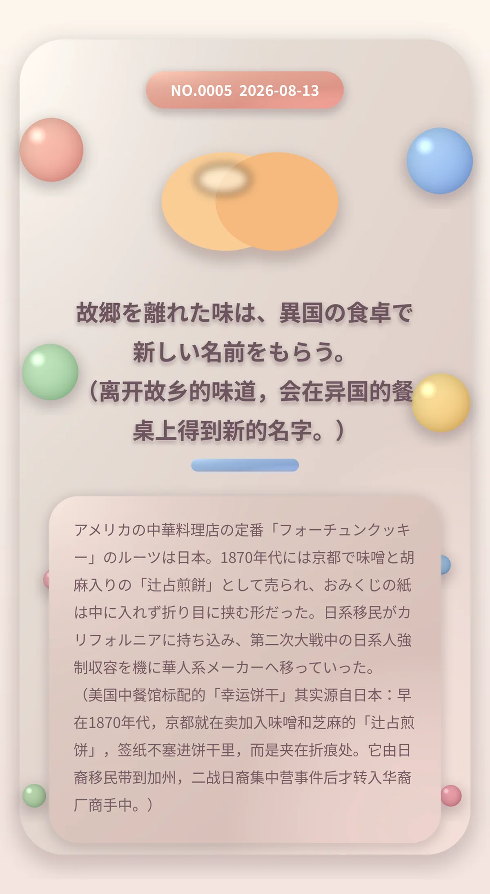

故郷を離れた味は、異国の食卓で新しい名前をもらう。 （离开故乡的味道，会在异国的餐桌上得到新的名字。）
アメリカの中華料理店の定番「フォーチュンクッキー」のルーツは日本。1870年代には京都で味噌と胡麻入りの「辻占煎餅」として売られ、おみくじの紙は中に入れず折り目に挟む形だった。日系移民がカリフォルニアに持ち込み、第二次大戦中の日系人強制収容を機に華人系メーカーへ移っていった。 （美国中餐馆标配的「幸运饼干」其实源自日本：早在1870年代，京都就在卖加入味噌和芝麻的「辻占煎饼」，签纸不塞进饼干里，而是夹在折痕处。它由日裔移民带到加州，二战日裔集中营事件后才转入华裔厂商手中。）
62cac4c1e59f3da1冷知识由执笔的模型自行查证。逐条断言、来源与所引原句存档在纯文字副本里，未经程序逐字校验，留作事后核实。